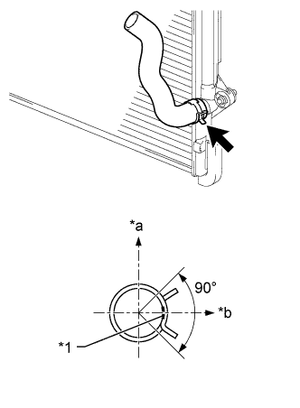

THERMOSTAT > INSTALLATION |
| 1. INSTALL WATER INLET SUB-ASSEMBLY WITH THERMOSTAT |
Install a new gasket and the water inlet with thermostat with the 3 nuts.
| 2. CONNECT NO. 2 RADIATOR HOSE |
|  |
Install the No. 2 radiator hose to the radiator.
| *1 | Paint Mark |
| *a | Upper Side |
| *b | RH Side |
| 3. INSTALL AIR TUBE SUB-ASSEMBLY |

| *1 | Projection | *2 | Paint Mark |
| *a | Top | *b | Front |
Temporarily install the air tube with the 5 bolts.
Connect the No. 2 air injection system hose to the air switching valve LH as shown in the illustration.
Connect the manifold absolute pressure sensor connector and clamp.
Attach the 2 wire harness clamps.
Connect the No. 1 air injection system hose to the air switching valve RH as shown in the illustration.
Connect the air hose to the air pump as shown in the illustration.
Tighten the 5 bolts.
| 4. INSTALL AIR CLEANER CASE SUB-ASSEMBLY |
Install the air cleaner case with the 3 bolts.
| 5. INSTALL AIR CLEANER FILTER ELEMENT SUB-ASSEMBLY |
| 6. INSTALL AIR CLEANER CAP AND HOSE |
 |
Attach the 4 clamps to install the air cleaner cap and hose.
| *1 | Air Cleaner Hose |
| *2 | Throttle Body |
| *3 | Groove |
| *4 | Protrusion |
| *a | Upper Side |
| *b | Front |
Tighten the hose clamp.
Connect the mass air flow meter connector, No. 1 air hose and No. 2 ventilation hose and attach the wire harness clamp.
| 7. ADD ENGINE COOLANT |
Add engine coolant.
Slowly pour coolant into the radiator reservoir until it reaches the F line.
Install the reservoir cap.
Install the radiator cap.*1
Start the engine and stop it immediately.*2
Allow approximately 10 seconds to pass. Then remove the radiator cap and check the coolant level. If the coolant level has decreased, add coolant.*3
Repeat steps *1, *2 and *3 until the coolant level does not decrease.
Install the radiator cap.*4
Set the air conditioning as follows.*5
| Item | Condition |
| Fan speed | Any setting except off |
| Temperature | Toward WARM |
| Air conditioning switch | Off |
Start the engine, warm it up until the thermostat opens, and then continue to run the engine for several minutes to circulate the coolant.*6
Stop the engine and wait until the engine coolant cools down to ambient temperature. Then remove the radiator cap and check the coolant level.*7
If the coolant level has decreased, add coolant and warm up the engine until the thermostat opens.*8
If the coolant level has not decreased, check that the coolant level in the radiator reservoir is at the F line.
If the coolant level is below the F line, repeat steps *4 through *8.
If the coolant level is above the F line, drain coolant until the coolant level reaches the F line.
| 8. INSPECT FOR COOLANT LEAK |
Fill the radiator with coolant and attach a radiator cap tester.
Warm up the engine.
Using the radiator cap tester, increase the pressure inside the radiator to 118 kPa (1.2 kgf/cm2, 17 psi), and check that the pressure does not drop.
If the pressure drops, check the hoses, radiator and water pump for leaks. If no external leaks are found, check the heater core, cylinder block and head.
| 9. INSTALL V-BANK COVER SUB-ASSEMBLY |
 |
Attach the 2 V-bank cover hooks to the No. 1 V-bank cover bracket. Then align the 2 V-bank cover grommets with the 2 pins and press down on the V-bank cover to attach the pins.
| *1 | Pin |
| *2 | Grommet |
| *3 | Hook |
| *4 | No. 1 V-bank Cover Bracket |
| 10. INSTALL NO. 1 ENGINE UNDER COVER SUB-ASSEMBLY |
 |
Hook the No. 1 engine under cover to the vehicle body as shown in the illustration.
Install the 4 bolts.
| 11. INSTALL LOWER FRONT BUMPER COVER |
Install the lower front bumper cover with the 5 bolts and clip.
| 12. INSTALL UPPER RADIATOR SUPPORT SEAL |
Install the upper radiator support seal with the 13 clips.